Released on February 6, 2008
(Next Release on February 13, 2008)
A Possible Economic Slowdown and Its Impact on Oil Demand
Economic analysts became concerned about the durability of the U.S. economic expansion earlier in 2007 due primarily to the apparent weakness in the housing market and the possibility that this weakness would spread to other sectors of the economy. By August 2007, U.S. economic policy makers, households, and firms became even more concerned about the economy as financial market conditions deteriorated. Last Friday’s Employment Report released by the U.S. Bureau of Labor Statistics reported a small decline in U.S. non-farm payroll employment, the second disappointing monthly report on employment in a row. This report resulted in economic analysts marking up their assessments of the chances of a recession in the United States during 2008. Their fear is that with unsettled financial markets and increased uncertainty regarding job prospects, households and businesses will cut spending, resulting in a decline in economic activity – a recession.
Against this backdrop, it is natural to consider the impacts of a recession, should it occur, on petroleum markets and petroleum demand. When we posed this question to one of our resident economists, we received an answer typical from practitioners of that discipline: “It depends on whether households, firms (including oil producers), and economic policy makers anticipate an economic contraction and what actions households, firms and policy makers take in response to this concern.” Not clearly understanding the implications of this open-ended response, we asked him to expand on it.
A recession in the United States economy will have a significant effect on the demand for petroleum products. However, as oil prices have moved from $3 per barrel in the early 1970s to $90 per barrel today, U.S. firms have found more energy efficient ways to produce goods and services. In addition, as oil prices have risen, firms have chosen to move production abroad to areas where the costs of other factors of production (primarily wages) are lower to offset the increase in the price of energy so that they could remain competitive in their delivery of goods and services. Statistics aside, since the use of energy is an integral part of the production of nearly all goods and services in an advanced economy such as the United States, a decline in U.S. economic activity would result in a decline in energy use. But, by how much?
Our economist went on to note that most economic forecasters estimate the full employment growth rate of the economy to be roughly 2.5 percent per year. So, if the economy contracted rather than grew, the shortfall in output would be on the order of at least 3 percent of U.S. gross domestic product (GDP). But, since the U.S. economy has been in this long period of adjustment toward greater energy efficiency of production since the early 1970s, the shortfall in consumption of petroleum products would be proportionately somewhat less. However, since we live in an era of globalization, characterized by increasingly internationally integrated production and consumption, a recession in the United States most likely would lead to slower growth and lower petroleum consumption abroad as well. So, other things equal, a decline of up to 400 to 500 thousand barrels per day in U.S. petroleum consumption would be a lower bound – “all else equal,” he emphasized. What would be the effect on the price?
When asked about the effect on the oil price, our resident economist again responded: “IT DEPENDS!!!” When he calmed down, he consented to tell us a couple of stories.
During the early 1990s, the emerging economies of East Asia were growing quite rapidly. As their economies grew, so did the thirst for petroleum, and petroleum consumption grew quite rapidly as well. During the summer of 1997, a financial crisis began in Thailand and spread throughout East Asia. In response to this financial crisis, financial authorities, due in part, to advice from the International Monetary Fund, tightened economic policy intensifying the economic contraction. With the economy in decline, petroleum consumption growth began to decline after growing strongly earlier in the decade. Firms, including oil producers, had not anticipated this slowdown in oil demand, so oil inventories began to build putting downward pressure on prices. In November of 1997, OPEC, rather than cutting oil production in this environment of declining consumption, increased production. The result: an unanticipated decline in economic activity, macroeconomic policy that accentuated the economic contraction rather than alleviating it, and an oil production policy that increased the crude oil inventory overhang rather than correcting it. This combination of responses to the unanticipated recession led to a sharp decline in crude oil and product prices.
“It is instructive to examine the evolution of the oil market in 2007,” our resident economist continued. At the beginning of last year when the housing market was in apparent decline and many homeowners were already struggling to pay their mortgages, some economic analysts were spouting numbers like 40 percent to 50 percent probability of a recession in the United States in late 2007 or early 2008. With the risks of a recession anticipated in 2007 rather than unanticipated as in 1997, OPEC cut crude oil production and kept a tight reign on crude oil inventories. Economic policy makers were attentive to the risks of a downturn in economic growth both in the United States and in other advanced economies. The Federal Reserve cut interest rates aggressively in the second half of last year, and the central banks of the other advanced economies that were expected to raise interest rates, kept rates on hold. The net effect of these economic policy actions was that the United States economy did not contract into a recession. Instead, it is estimated to have grown from the fourth quarter of 2006 to the fourth quarter of 2007 at 2.5 percent, a rate that economists estimate that GDP will grow at full employment. This rate of growth is supportive of demand for petroleum products. The combination of firms and policy makers anticipating an economic slowdown or contraction, policy makers taking aggressive action to offset the signs of economic weakness, and OPEC’s cut in crude oil production in order to keep crude oil markets tight, resulted in a sharp rise in crude oil prices during the second half of 2007.
So, how will oil prices be affected by economic developments in 2008? After pausing to catch his breath, our resident economist stated emphatically: “IT DEPENDS!!!”
Residential Heating Oil Prices Drop Further
Residential heating oil prices fell again during the period ending February 4, 2008. The average residential heating oil price decreased by 1.0 cent last week to reach 330.6 cents per gallon, which was an increase of 94.6 cents from this time last year. Wholesale heating oil prices saw a decrease of 5.8 cents, falling to 253.9 cents per gallon, which was a gain of 87.1 cents compared to the same period last year.
The average residential propane price barely moved, increasing by only 0.1 cent to reach 256.3 cents per gallon. This was an increase of 56.7 cents compared to the 199.6 cents per gallon average for this same time last year. Wholesale propane prices decreased by 1.4 cents per gallon, from 154.6 to 153.2 cents per gallon. This was an increase of 54.1 cents from the January 29, 2007 price of 99.1 cents per gallon.
Retail Diesel Price Gains 2 Cents
The U.S. average retail price for regular gasoline edged higher after three weeks of falling prices, to 297.8 cents per gallon as of February 4, 2008, 0.1 cent above last week and 78.7 cents over a year ago. Regional prices were mixed with the East Coast falling 2 cents to 300.5 cents per gallon. The Midwest jumped 4 cents to 296.2 cents per gallon, 81.9 cents per gallon more than last year. The Gulf Coast had the lowest regional price as a drop of 0.3 cent brought the price to 287.2 cents per gallon. The Rocky Mountain price rose 2.7 cents to 294.1 cents per gallon. Although losing 3.1 cents last week, the West Coast remained the highest regional price at 305.5 cents per gallon. The average price for regular grade in California dropped to 310.7 cents per gallon, 4.1 cents less than last week.
The retail diesel fuel price gained 2.1 cents to 328.0 cents per gallon, 84.5 cents higher than last year. Prices were up throughout the country with the highest regional price occurring on the East Coast which was up by 1.1 cents to 333.8 cents per gallon. The lowest regional price, of 324.3 cents per gallon, was in the Midwest following a rise of 2.5 cents. The Gulf Coast tallied the largest increase, settling at 324.7 cents per gallon after climbing 2.9 cents. The Rocky Mountains had a 2.4 cent increase, bringing the price to 326.0 cents per gallon. The West Coast price grew 2.4 cents to 332.5 cents per gallon. California prices jumped 3.1 cents to 337.7 cents per gallon.
Propane Reports Above Average Draw In January
Propane stockholders withdrew about 12.7 million barrels of propane from primary supplies during January 2008, a level slightly above the most recent 5-year average of 11.6 million barrels. Last week, total propane inventories posted the largest decline of the heating season with a 3.9-million-barrel drop, leaving inventories at an estimated 38.5 million barrels as of February 1, 2008. Midwest and Gulf Coast inventories posted large respective declines of 1.8 million barrels and 1.3 million barrels. East Coast inventories showed a weekly decline of 0.3 million barrels, while the combined Rocky Mountain/West Coast region posted a larger 0.5 million barrel decline. Propylene non-fuel use inventories slipped lower but accounted for a larger 7.2 percent share of total propane/propylene inventories from 6.3 percent the prior week.
Registration Now Open for EIA Energy Conference on April 7-8
Registration is now open for an energy conference that EIA is holding in Washington, DC on April 7-8. To see the exciting agenda planned and to register for the free conference, please go to:
http://www.eia.doe.gov/eia_conference_2008.html.
Text from the previous editions of “This Week In Petroleum” is now accessible through a link at the top right-hand corner of this page.
| Retail Prices (Cents Per Gallon) | |||||||
| 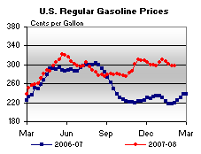 | 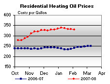 | ||||||
| 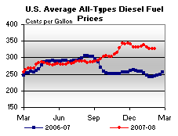 | 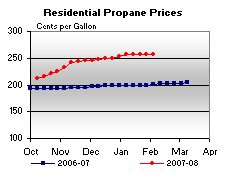 | ||||||
| Retail Data | Changes From | Retail Data | Changes From | ||||
| 02/04/08 | Week | Year | 02/04/08 | Week | Year | ||
| Gasoline | 297.8 | Heating Oil | 330.6 | ||||
| Diesel Fuel | 328.0 | Propane | 256.3 | ||||
| Spot Prices (Cents Per Gallon) | |||||||||||||||||||||||||||||||||||||||
| 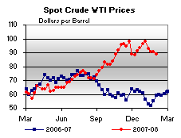 | 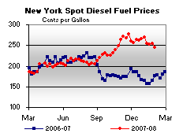 | ||||||||||||||||||||||||||||||||||||||
| 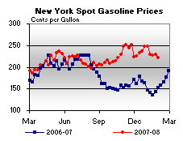 | 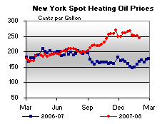 | ||||||||||||||||||||||||||||||||||||||
|
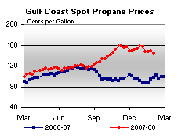 | ||||||||||||||||||||||||||||||||||||||
| Stocks (Million Barrels) | |||||||
| 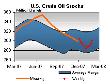 | 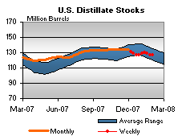 | ||||||
| 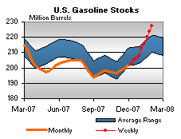 | 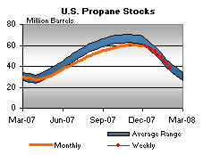 | ||||||
| Stocks Data | Changes From | Stocks Data | Changes From | ||||
| 02/01/08 | Week | Year | 02/01/08 | Week | Year | ||
| Crude Oil | 300.0 | Distillate | 127.1 | ||||
| Gasoline | 227.5 | Propane | 38.493 | ||||